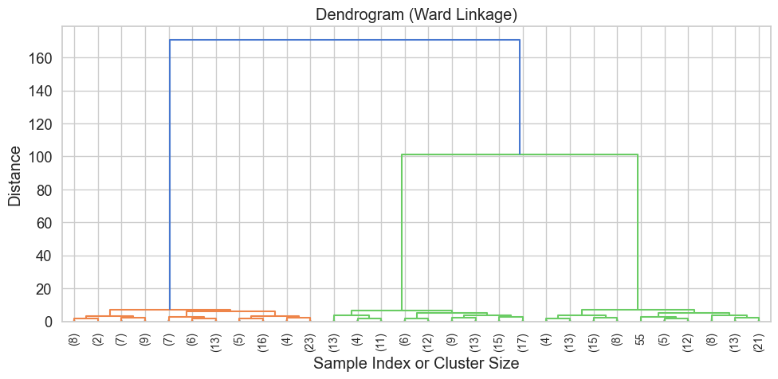
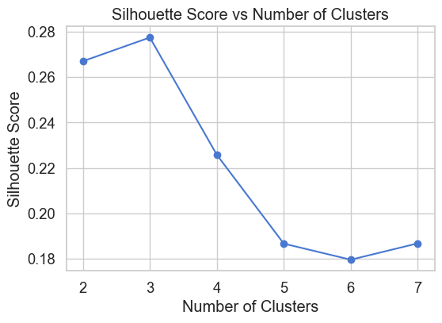

Hierarchical Clustering is an unsupervised learning technique that builds a tree-like structure of nested clusters, called a dendrogram.
Unlike K-Means, hierarchical clustering does not require you to choose the number of clusters upfront. Instead, it starts by either: - Agglomerative (bottom-up): each data point starts in its own cluster, and pairs of clusters are merged step-by-step. - (Less common) Divisive (top-down): starts with one big cluster and recursively splits it.
üߨ How It Works
In agglomerative clustering (which is most common and used here): 1. Each point is its own cluster. 2. At each step, the two closest clusters are merged. 3. This continues until all points belong to a single cluster (root of the tree). 4. The hierarchy is represented visually using a dendrogram.
✂️ Cutting the Dendrogram
To use the clustering result practically, we “cut” the dendrogram at a certain height. This determines how many clusters you end up with.
The n_clusters hyperparameter controls this cut — it tells the algorithm where to stop merging and assign cluster labels.
üß™ What We‚Äôll Do
In this notebook: - We’ll apply Agglomerative Hierarchical Clustering on the Wine dataset. - We’ll explore the effect of three hyperparameters: - n_clusters: how many clusters to cut the dendrogram into. - linkage: how to compute distance between clusters (e.g. average, complete, ward). - metric: how to compute distance between individual points (e.g. Euclidean, Manhattan). - We’ll measure clustering quality using: - Silhouette Score - Cluster composition table - We’ll also visualize the dendrogram to better understand the clustering structure.
üìå Tip:
Dendrograms can be plotted using scipy.cluster.hierarchy.dendrogram and are great for visual inspection.
Demonstration: Hierarchical Clustering on Synthetic Data
We’ll generate a 2D dataset using make_blobs with 3 obvious clusters and apply hierarchical clustering using the ward linkage method (which minimizes variance).
The dendrogram represents the hierarchical merging of clusters based on their distance.
Each leaf represents a data point (or cluster of points).
The height of each U-shaped link represents the distance (or dissimilarity) between merged clusters.
By drawing a horizontal line across the dendrogram, you can “cut” it at a chosen height to determine the number of clusters.
In our case, we used Ward linkage, which merges clusters to minimize variance within each cluster.
from scipy.cluster.hierarchy import dendrogram, linkage# Compute the linkage matrix using Ward's methodlinked = linkage(X_synth, method='ward')# Plot the dendrogramplt.figure(figsize=(10, 5))dendrogram(linked, truncate_mode='lastp', # show only the last p merged clusters p=30, leaf_rotation=90., leaf_font_size=10., show_contracted=True)plt.title("Dendrogram (Ward Linkage)")plt.xlabel("Sample Index or Cluster Size")plt.ylabel("Distance")plt.grid(True)plt.tight_layout()plt.show()

Clustering the Wine Dataset
We’ll now apply hierarchical clustering to the Wine dataset, which includes 13 chemical features of wines from 3 different grape cultivars.
Our goal is to see if hierarchical clustering can discover meaningful groupings in the data, without using the true labels.
from sklearn.datasets import load_winefrom sklearn.preprocessing import StandardScalerimport pandas as pd# Load and scale the datawine = load_wine()X_raw = wine.datay_true = wine.targetfeature_names = wine.feature_namesscaler = StandardScaler()X = scaler.fit_transform(X_raw)# Create DataFramedf_wine = pd.DataFrame(X_raw, columns=feature_names)df_wine["Target"] = y_truedf_wine.head()
alcohol
malic_acid
ash
alcalinity_of_ash
magnesium
total_phenols
flavanoids
nonflavanoid_phenols
proanthocyanins
color_intensity
hue
od280/od315_of_diluted_wines
proline
Target
0
14.23
1.71
2.43
15.6
127.0
2.80
3.06
0.28
2.29
5.64
1.04
3.92
1065.0
0
1
13.20
1.78
2.14
11.2
100.0
2.65
2.76
0.26
1.28
4.38
1.05
3.40
1050.0
0
2
13.16
2.36
2.67
18.6
101.0
2.80
3.24
0.30
2.81
5.68
1.03
3.17
1185.0
0
3
14.37
1.95
2.50
16.8
113.0
3.85
3.49
0.24
2.18
7.80
0.86
3.45
1480.0
0
4
13.24
2.59
2.87
21.0
118.0
2.80
2.69
0.39
1.82
4.32
1.04
2.93
735.0
0
Hyperparameter: Number of Clusters (n_clusters)
This parameter determines how many clusters to extract from the dendrogram.
If n_clusters is too low, very different groups may be merged together.
If it’s too high, the algorithm might break up natural clusters into smaller subgroups.
The Silhouette Score can help us pick a good value by balancing cohesion and separation.
We will test a range of n_clusters values and select the best one using Silhouette Score.
cluster_range =range(2, 8)results_k = []for k in cluster_range: hc = AgglomerativeClustering(n_clusters=k, linkage="ward") labels = hc.fit_predict(X) score = silhouette_score(X, labels) results_k.append((k, score))df_k = pd.DataFrame(results_k, columns=["n_clusters", "Silhouette Score"])df_kplt.figure(figsize=(6,4))plt.plot(df_k["n_clusters"], df_k["Silhouette Score"], marker='o')plt.xlabel("Number of Clusters")plt.ylabel("Silhouette Score")plt.title("Silhouette Score vs Number of Clusters")plt.grid(True)plt.show()

Hyperparameter: Linkage Method (linkage)
The linkage method controls how the distance between clusters is defined when merging them:
"ward": minimizes the total within-cluster variance (works only with Euclidean distance)
"complete": uses the maximum pairwise distance (tends to create compact clusters)
"average": uses the average pairwise distance
"single": uses the minimum pairwise distance (can lead to chaining effects)
Different linkage strategies can lead to very different cluster shapes and behaviours.
üîó Ward Linkage (Variance Minimization)
Ward linkage is a popular method used in hierarchical (agglomerative) clustering. Unlike other linkage methods that rely purely on distances between points, Ward’s method focuses on minimizing the variance within each cluster.
At each step, it merges the pair of clusters that results in the smallest possible increase in the total within-cluster variance, also known as inertia.
üßÆ Inertia Formula:
The within-cluster sum of squares (inertia) is given by:
where: - \(k\) is the number of clusters - \(x\) is a data point in cluster \(C_i\) - \(\mu_i\) is the centroid of cluster \(C_i\) - \(\| x - \mu_i \|^2\) is the squared Euclidean distance
✅ Characteristics:
Produces compact, spherical clusters
Similar to what K-Means produces
Tends to avoid chaining and imbalanced cluster sizes
⚠️ Limitation:
Ward linkage only supports Euclidean distance, since it is based on variance and centroids.
In summary:
Ward linkage is a strong default choice for hierarchical clustering when you expect well-separated, compact clusters and are working in Euclidean space.